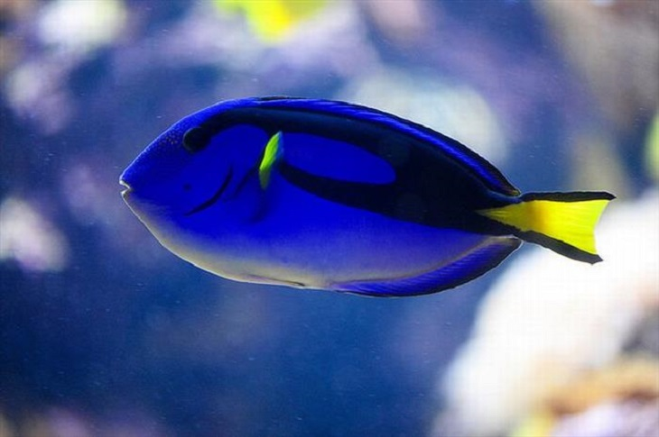

The Blue Planet
Blue has long been considered the world's most popular favorite color, even though it's the rarest occuring pigment found in nature. Sure, we can see blue quite easily in the sky and water, but its tendency to appear in animals, like the endangered Grand Cayman blue iguana above, is fairly uncommon.
Blue And Animals
The main reason why blue is so elusive has to do with the relatively narrow range of pigments that cause coloration in animals. Red and orange pigments are produced by carotenoids, brown and black pigments are produced by eumelanins and yellow pigments are produced by pteridine compounds.
While plants can produce blue pigments thanks to anthocyanins, most creatures in the animal kingdom are unable to make blue pigments. Any instances of blue coloration you come across in animals are typically the result of structural effects, such as iridescence and selective reflection.
Take, for example, the bluejay. This little bird produces melanin, meaning it should technically appear almost black. However, tiny air sacs in the bird's feathers scatter light, making it appear blue to our eyes. This is called Rayleigh scattering, a phenomenon that is also responsible for the age-old "why is the sky blue?" question.

Where To Find Blue

Paracanthurus hepatus is a species of surgeonfish with a striking blue body, a yellow tail and a black 'palette' design. Although they are found in small numbers in various spots around the world, they are not common anywhere.
There are species of poisonous blue frogs in existence, but others like the common tree frog are mutant versions of their more widely known green brothers, with the unusual but beautiful coloring attributed to missing pigment in their skin.
Speaking of poisonous blue frogs, the most famous of all is the blue poison dart frog. In most cases, it is not beneficial for creatures to be blue, which probably explains why there aren't many blue animals. But if you have poisonous skin and want to warn off predators, then blue is a very handy color to be!